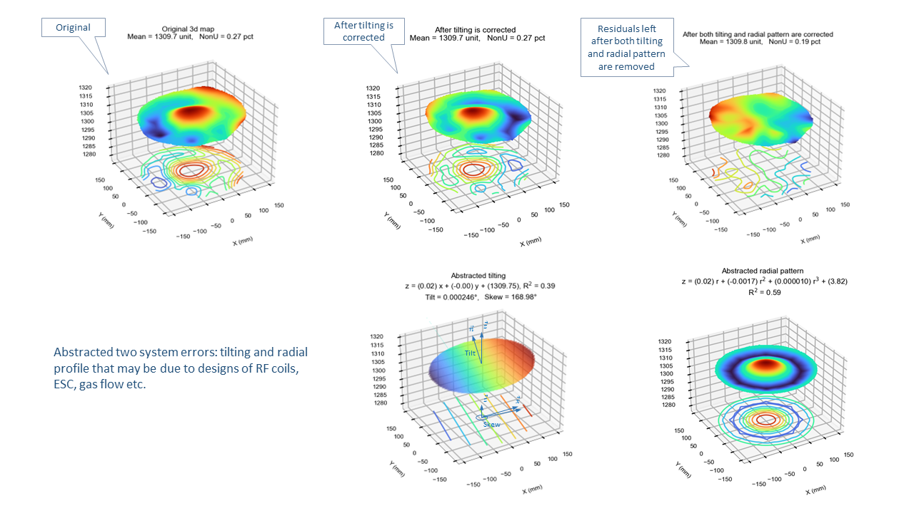
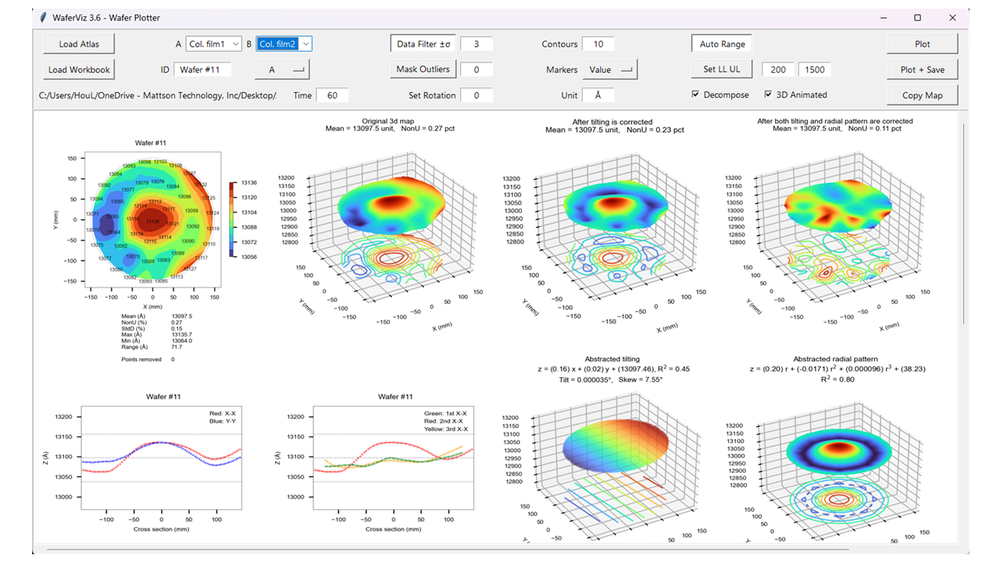

Wafer Visualization - WaferViz
About
WaferViz is a free wafer plotting software intended for semiconductor engineers.
As a process engineer the author found it is helpful having plotting program handy for converting raw data to presentable graphs since in fabs where plotting programs are often embedded in metrology tools and not readily accessible.
Key Features
- Animated 3d map:

- 3d maps with profile decomposition:
- 2d maps with rotation:
- Cross sections:
- Thickness as radius and theta increasing:
- Thickness distribution:
- App user interface:
User Guide
Click "How to use" in the left sidebar for instruction.